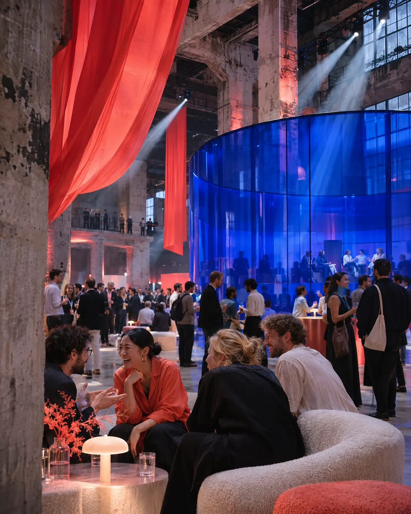

DESIGN SYSTEM / TOP LOCATIES 01 / 08
GEENWEBSITE.
Eén herkenbare ontwerpstijl. Voor alle concepten, locaties, leveranciers en nieuwe ideeën die nog volgen.

BEELD TER INSPIRATIE / DESIGNREFERENTIE 2026
01 / DE VISUELE IDENTITEIT WEINIG KLEUREN / VEEL KARAKTER
De beste eventwebsites laten iets voelen nog vóór je gaat zoeken.
EEN POSTER.ÉÉN STEM. De merktaal combineert zware, compacte typografie met het ritme van een onafhankelijk magazine. Geen sjabloon vol afgeronde kaarten, maar een grote gedachte met helder bruikbare informatie.
LEES DE ONTWERPREGELS ↗
KOBALT #2546BB
DISPLAY / ARCHIVO BLACK / UPPERCASE / -0.075EM
VIND EEN PLEK
MICROCOPY / DM MONO / 11PX
01 / DE ONTDEKKING
BODY / DM SANS / 15PX
Een bijzondere bijeenkomst begint niet met een vergaderzaal. Ze begint met de vraag wat je bij mensen wilt losmaken.
02 / GEVOELENSKOMPAS ONTDEKKEN IS GEEN FILTERFORMULIER
HOE MOETVOELEN? Kies één of twee gevoelens. Het voorbeeld hieronder reageert op je keuze.
01 / GEVOEL + ENERGIE Met nieuwe zin naar huis. 02 / GEVOEL + VERBINDING Echt iets met elkaar delen. 03 / GEVOEL + VERWONDERING Een beetje magie. 04 / GEVOEL + RUST Tijd voor aandacht. 05 / GEVOEL + FOCUS Een helder idee verder. 06 / GEVOEL + TROTS Samen iets vieren.
DIT PAST BIJ JOU. RESET KEUZE ↗
Demonstratie met redactionele matches; geen berekende waarschijnlijkheid.
03 / UITGELICHT CONCEPT ÉÉN GROOT BEELD / ÉÉN VERHAAL
CONCEPT 001 / EXPERIENCE SERIES
HET FESTIVAL Een kennisfestival als ontdekkingstocht. Ontmoetingen, experimenten en ideeën die blijven hangen.
100–500 GASTEN ENERGIE VERWONDERING
BEKIJK HET IDEE. ↗
04 / KNOPPEN, LABELS & INTERACTIES BEWUST EENVOUDIG
DE BEDIENING
01 / DUNNE REGELS Structuur ontstaat met lijnen, niet met zes verschillende grijstinten of zware schaduwen.
02 / ZICHTBARE ACTIES Korte imperatieven, rechte knoppen en een duidelijke pijl.
03 / NOOIT ZOMAAR ICONEN Pijlen, nummering en de typografische ster vormen samen de vaste vormentaal.
05 / ZOEKEN EN FILTEREN VAN GEVOEL NAAR DE ECHTE PLEK
VIND EEN PLEK
Voorbeeld van de zoekstrip. De live filtering staat in de bestaande locatiespagina.
06 / AANBEVOLEN LOCATIES LOCATIE + MATCHREDEN
DE JUISTEVERANDERT In deze voorbeelden zijn de beelden illustratief. Elke locatiekaart hoort later echte fotografie te krijgen.
DEN HAAG / INDUSTRIEEL FOKKER TERMINAL Een locatie met karakter voor een festivalsetting.
WAAROM HIER? Grote ruimtes maken verschillende programmaonderdelen mogelijk.
KIES DEZE PLEK
GRONINGEN / RAUW GRAANFABRIEK Een rauwe omgeving voor een verrassend event.
WAAROM HIER? Meerdere sferen en onderdelen kunnen naast elkaar ontstaan.
KIES DEZE PLEK
VALKENBURG / INNOVATIE UNMANNED VALLEY Een context waarin ontdekken en technologie samenkomen.
WAAROM HIER? Past bij een toekomstgericht programma vol experimenten.
KIES DEZE PLEK
Voorbeelden uit de eerdere ontwerpstudie. Beschikbaarheid, faciliteiten en geschiktheid moeten worden bevestigd.
07 / DE MAKERS DE ROL IN DIT CONCEPT TELT
HET WORDT PASMENSEN.
01 / AV & TECHNIEK ✳ LICHT & GELUID. Voor een dynamische show, goede verstaanbaarheid en een krachtig verhaal.
VOEG TOE + 02 / CATERING ↗ ETEN ALS BELEVING. Van ontvangst tot borrel: het culinaire programma vertelt mee.
VOEG TOE + 03 / EXPERIENCE + CREATIEVE REGIE. Een heldere route van eerste verwondering tot gezamenlijke afsluiting.
VOEG TOE + 04 / ONTVANGST ↓ MENSEN DIE VERBINDEN. Gasten ontvangen, de weg wijzen en gesprekken op gang brengen.
VOEG TOE +
Dit zijn voorbeeldrollen. Koppel in productie concrete, geverifieerde Greenbookings-leveranciers aan deze rollen.
08 / VOORBEELDPROGRAMMA EEN DAG DIE BLIJFT HANGEN
VAN HALLOWOW. Een eventconcept wordt veel tastbaarder met een voorbeeldprogramma. De typografische tijdlijn past bij de editorial stijl.
09:30 EERST ONTDEKKEN. Een ontvangst waarbij de route zich vanzelf ontvouwt.
11:00 HET EXPERIMENT. Korte sessies en verrassende ontmoetingen.
14:00 SAMEN MAKEN. Nieuwe inzichten krijgen direct vorm.
16:30 MET ENERGIE WEG. De laatste ontmoeting is het begin van iets nieuws.
Alle tijden zijn een illustratief programma, geen bestaand arrangement.
09 / CONCEPTCOMPOSER EEN PLAN DAT JE KUNT MEENEMEN
MAAK HETVAN JOU. Selecteer hierboven een plek en één of meer makers. Het plan hieronder reageert direct op je keuzes.
01 / GEKOZEN LOCATIE NOG GEEN LOCATIE GEKOZEN.
02 / GEKOZEN MAKERS NOG GEEN MAKERS GEKOZEN.
JOUW SELECTIE / ONTWERPDEMO KOPIEER MIJN PLAN ↗
10 / NIEUW IN V1.1 — NAVIGATIE & RITME UIT HUPR / CONCEPT / LOCATIES
TUSSENMAAT VOORCONCEPTKOPPEN.
.TL-DISPLAY--MD / CLAMP(38PX, 5.6VW, 88PX) — VOOR KOPPEN DIE IN HUN ONTWORPEN REGELS MOETEN BLIJVEN
HOME / EVENTCONCEPTEN / HET FESTIVAL VAN MORGEN.TL-CRUMB HET CONCEPT / 001 SAMENSTELLEN ↗ .TL-SIGNATURE — WIT LABEL = DOOR DE BEZOEKER GEKOZEN GEVOEL
ALLE IDEEËN / 04 KENNIS & INSPIRATIE / 02
← → RESET ALLES ↺ VOORBEELD ↗
VOOR WIE Kennisorganisaties, netwerken
BEDOELING Kennis delen die deelnemers actief maakt.
GROEPSGROOTTE 100–500 gasten (indicatief) .TL-FACTS — NUCHTERE FEITEN ONDER EEN EDITORIAL KOP
11 / LOCATIEZOEKER FILTERS / CATALOGUS / STATES
SFEERBEELD • INDUSTRIEEL ✓
01 / ZUID-HOLLAND DEN HAAG
VOORBEELD LOCATIE Catalogusvariant met beeldstatus, bron en concepten.
✳ FOTO VOLGT VIA GREENBOOKINGS
02 / GRONINGEN GRONINGEN
GEEN EIGEN FOTO .tl-placeholder: eerlijk in plaats van een willekeurige stockfoto.
GEEN MATCH. Lege staat met herstelactie.
RESET DE ZOEKOPDRACHT ↺ DAT GING MIS. Foutstaat: benoem de storing, bied opnieuw proberen.
OPNIEUW PROBEREN ↺
.TL-STATE--EMPTY / --ERROR / --LOADING (SKELET STOPT BIJ REDUCED MOTION)
12 / HOMEPAGE-BOUWSTENEN PIECES / STEPS / ECOSYSTEEM
13 / NIEUW IN V1.2 — COMPLETE CONCEPTEN DRAAIBOEK / MENU / CHECKLIST / DIALOOG / CONTACT
VAN MINUUTMINUUT.
TIJD DUUR ONDERDEEL WIE WAAR
09:00 30 MIN Inloop .tl-runbook — dagdraaiboek als redactionele tabel. NODIG: BADGES · KOFFIE Catering Foyer
.tl-checklist Groep per vakgebied Afvinkbaar in het plan op maat OPEN .TL-DIALOG ↗ NEEM CONTACT OP ↗
01 / 09:30 / .TL-DIALOG SLUITEN ×
PROGRAMMA- Native <dialog>: Escape en klik op de achtergrond sluiten, focus gaat terug naar de knop. Gebruikt voor programma-onderdelen en contact met een locatie — nooit voor een heel concept.
Wat gebeurt er Zo pak je het aan Wie en wat je nodig hebt TIP Eén praktische tip per onderdeel.